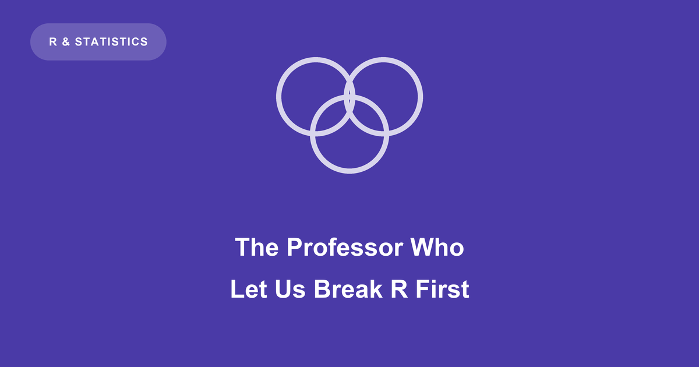

Most applied statistics published in the last twenty-five years was computed by software that somebody had to keep working. A good deal of it ran on R, the free language that statisticians write their methods in. Keeping R working is not one job but a permanent one: making it still compile on this year’s compilers and this year’s machines, making a function that gave the right answer in 2004 give it now, and making sure the thousands of add-on packages built on top of it do not break when the floor moves.
None of that produces a theorem. There is no result to attach your name to, no paper, and — normally — no prize.
The prize went to the people who kept the thing running
The Rousseeuw Prize for Statistics is a $1 million award given every two years by the King Baudouin Foundation, funded by the Belgian statistician Peter Rousseeuw himself, for statistical work that has changed something in the world. Its first two rounds went where you would expect: causal inference in 2022, the false discovery rate in 2024. Named methods. Theorems you can teach.
The 2026 prize went instead to five people for building and maintaining R: Brian Ripley, Martin Maechler, Kurt Hornik, Peter Dalgaard, and Luke Tierney. Half the money goes to those five, for the longest sustained contributions, and half to the rest of R Core — which is itself the point. There is no single result here to hand to one person.
R Core is the couple of dozen people, over the project’s whole life, who can change the language itself rather than write a package that sits on top of it. What they maintain is base R: what you get before you install anything, the parts every package assumes are already there and correct. Within that, Professor Ripley’s share is enormous — the folklore in the R community credits him with the large majority of base R, written over decades. Treat that as folklore: nobody has published an exact accounting. Nobody disputes the direction of it either.
That is the version of him the citation records. The version I met was a man who handed us his half-finished work.
We got the broken builds first
I was a masters student in the R 0.7 era, and later Professor Ripley’s doctoral student, working on sorting cases into ordered categories — mild, moderate, severe — from measurements with far more variables than subjects, using a method related to support vector machines. I arrived on windoze, having never touched Linux, which in a statistics department at that time put me a fair way behind the line.
What I remember most is not a seminar. Pre-release builds of R — the next version, compiled before anyone outside the department had it, bugs and all — went onto the machines in the statistics laboratory, the room of shared computers where students did their actual computing. We then did our actual work on top of them: real datasets, real deadlines, real supervisions the following week.
Nothing about this was formal. There was no tracker, no test plan, and nobody said “QA” — quality assurance, the thing with a process and a checklist attached. He had simply noticed that a room full of students under deadline pressure is an excellent way to find out what breaks. We were a bug-testing team that mostly did not realise it was one, and none of that arrangement was visible from outside the building.
The mailing list met a different man
What was visible from outside was r-help, the public mailing list where anyone could send a question about R to everyone who read it. There he was blunt to the point of legend, terse in a way that people collected into a genre of its own — the “Ripley Facts”, affectionate in the way only a reputation people respect ever gets.
Lore also held that he answered posts at every hour, and the joke that he never slept got persistent enough that somebody checked. R’s source then lived in a Subversion repository, which stamps every change with a time. When it passed 50,000 commits in 2009, Yihui Xie — a few years before he wrote knitr — pulled those timestamps out and plotted the four most prolific core developers by hour of day, asking outright: “Does Prof Ripley Ever Sleep?”
The three others each had their slice of the day: Hornik avoiding the late hours, Maechler early in the morning, Dalgaard around noon. Ripley’s commits ran round the clock, heaviest in the morning. It is weaker evidence than it looks — a timestamp records when work landed, not when anyone was awake. But it is the closest the joke ever came to evidence, and what it really measures is the volume of unpaid hours going into other people’s problems.
What the prize is actually honouring
Neither the terseness nor the hours tell you what that attention was like to receive. As a supervisor, Professor Ripley was patient with me well past the point where I had earned it. I was not a great student, and I had turned up knowing none of the tools everyone else already had. He was generous with insight anyway — a few well-placed sentences that reorganised a month of work.
None of that came through in three-line mailing-list replies, and it did not need to. What the prize honours is the same thing the broken builds were: decades of unglamorous work, done out of sight, that a great deal of statistics turns out to be standing on. A room of students breaking next month’s build was one small piece of how it got done — and we did not notice we were part of it either.